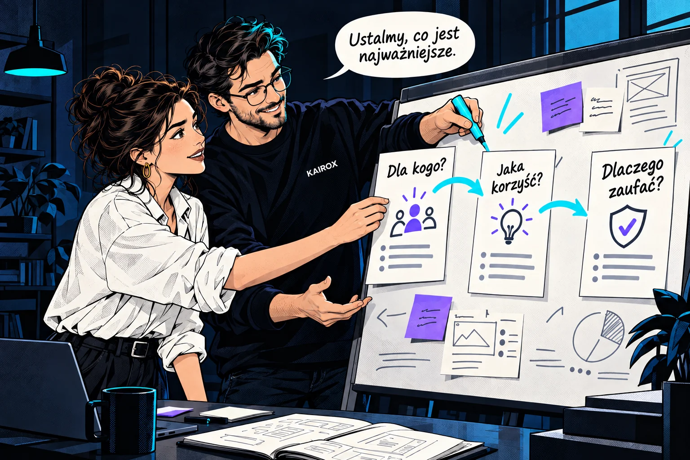

Metoda Agent 0
Najpierw ustalamy, co ma zrozumieć Twój klient
Dla kogo jest oferta? Jaką daje korzyść? Dlaczego warto zaufać? Strategia i komunikacja wyznaczają kierunek UX, designu i wdrożenia.

Strategia
Zanim powstanie strona, musimy zrozumieć biznes
Analizujemy ofertę, odbiorców, konkurencję i cele firmy. Najpierw ustalamy, co klient ma zrozumieć i jaką decyzję podjąć. Wygląd dobieramy później.
- Analiza firmy i oferty
- Analiza odbiorców
- Analiza konkurencji
- Określenie celu strony
Komunikacja
Definiujemy przekaz, który ma zostać zapamiętany
Użytkownik nie zapamięta całej strony. Zapamięta jedną główną myśl. Pomagamy ją znaleźć i zbudować wokół niej komunikację.
- Główny komunikat marki
- Argumenty sprzedażowe
- Język komunikacji
- Hierarchia treści
UX
Projektujemy drogę użytkownika
Zastanawiamy się, czego użytkownik szuka, czego się obawia i jakie informacje powinien zobaczyć w odpowiednim momencie.
- Struktura strony
- Kolejność informacji
- Projekt ścieżki użytkownika
- Punkty konwersji
Design
Wygląd wzmacnia komunikat
Design nie jest celem. Jest narzędziem, które pomaga budować zaufanie, czytelność i zapamiętywalność marki.
- Layout
- Typografia
- Kolory
- Komponenty interfejsu
Development
Dopiero teraz budujemy stronę
Kiedy strategia, komunikacja i UX są gotowe, wdrożenie staje się naturalnym etapem procesu, a nie próbą naprawiania problemów po fakcie.
- Responsywność
- Wydajność
- SEO techniczne
- Dalszy rozwój
Zacznijmy od rozmowy
Sprawdźmy, czy Twoja strona jasno pokazuje wartość firmy i pomaga klientowi podjąć decyzję.
Umów konsultację-
Jasny przekaz
Klient szybko rozumie, czym się zajmujesz i dla kogo jest oferta.
-
Lepsza decyzja
Strona odpowiada na pytania, obawy i potrzeby odbiorcy.
-
Więcej zaufania
Komunikacja, struktura i design wzmacniają wiarygodność marki.